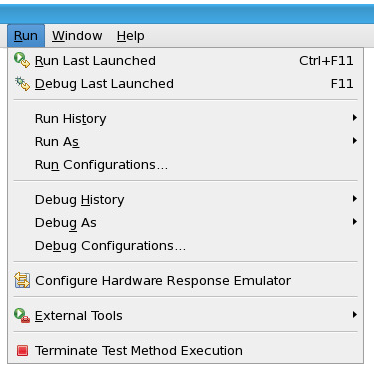

Run menu
The Run menu of the SmarTest Work Center contains the controls for running and debugging your test programs, testflows, and test methods.

Menu |
Function/Tool |
|---|---|
Run Last Launched |
Repeats the most recent launch in run mode. |
|
Debug Last Launched |
Repeats the most recent launch in debug mode. |
Run History |
Run a recently used launch configuration. |
|
Run As |
Presents a sub menu of registered run launch shortcuts. Launch shortcuts provide support for workbench or active editor selection sensitive launching. |
|
Run Configurations... |
Displays the run configuration dialog box, used to manage launch configurations, and execute them in Run mode. |
|
Debug History |
Debug using a recently used launch configuration. |
|
Debug As |
Presents a sub menu of registered debug launch shortcuts. Launch shortcuts provide support for workbench or active editor selection sensitive launching. |
|
Debug Configurations... |
Displays the debug configuration dialog box, used to manage launch configurations, and execute them in Debug mode. |
Configure Hardware Response Emulator |
Opens the Hardware Response Emulator dialog box. The emulator can be used to debug a testflows or test suites. |
|
External Tools |
Provides access to external tool configuration and run controls. |
Terminate Test Method Execution |
Terminates the selected testflow execution. |
Functional changes
- Introduced in SmarTest 7.5.4